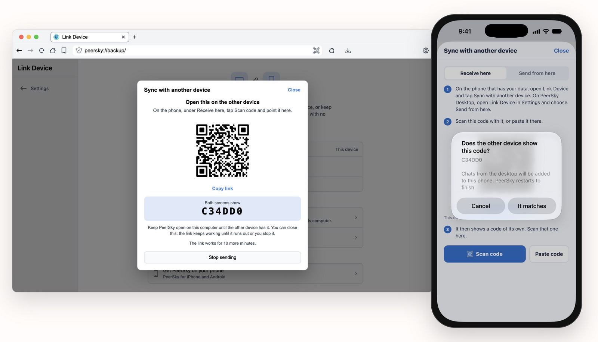
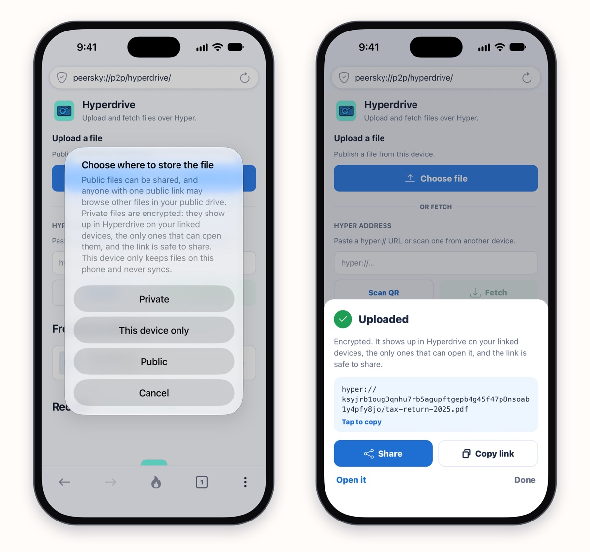
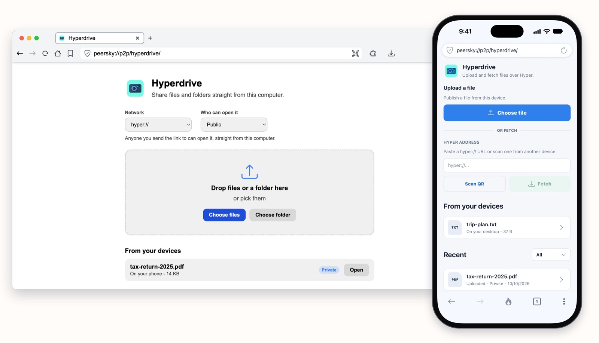
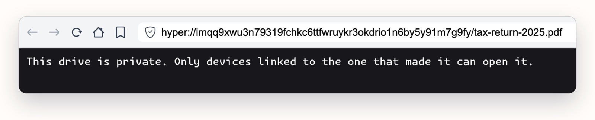
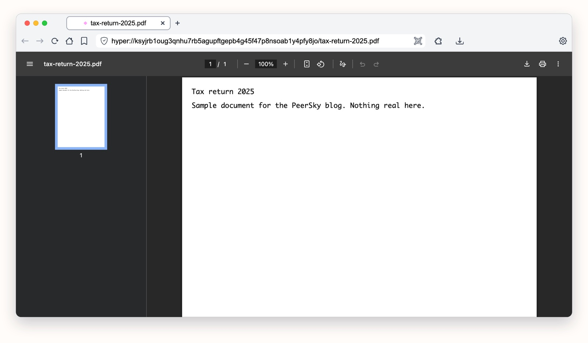
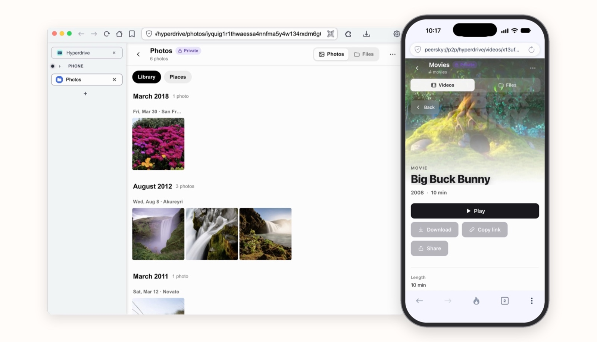

That old laptop in a drawer, or any other spare device, can be your own cloud. Link it to your phone with PeerSky once, and every file you save as Private shows up on it by itself and stays there, encrypted. Only your devices can open them. There's no account, no server and no monthly plan, and your devices' free space is the only limit.
If you've ever paid every month just to keep your own photos, or stopped before uploading a passport scan to someone else's computer, this is for you.
We built this because a file going from your phone to the spare device on the same desk has no business passing through someone else's data center. Most of us already own a spare device, and that's all a private cloud needs.
We'll use a laptop as the spare device here. You need PeerSky on both devices. Get it for your computer and your phone at peersky.p2plabs.xyz.
1. Link your devices
On your phone, open Settings, then Link Device, then Sync with another device. It shows a code. On the spare laptop, open Settings, then Link Device, then Sync with another device, and choose Send from here. Paste or scan the phone's code there and press Send. Scan the code the laptop shows back with your phone. When both screens show the same six characters, tap It matches.

Now both devices hold the same key. Nobody else has it, not even us.
2. Save a file as Private
In Hyperdrive on your phone, tap Choose file and pick Private. The file is encrypted on your phone before it goes anywhere. There's no size limit. A two-page PDF, a whole movie, anything your devices have room for.

3. Find it on the laptop
No link to email yourself, nothing to sign in to. By the time you've walked over to the laptop, the file is in Hyperdrive, under From your devices. The laptop's private files show up on the phone the same way.

How it works
Both hold the same key, from Link Device, and find each other with it. No server in between.
A cloud service keeps a list of your devices and passes your files between them. Here the key does that job. Each device makes the same meeting point from it and looks for the other there, both over the internet and on your home Wi-Fi, so an internet outage doesn't stop them. We tested it with the cable pulled out of the modem. When they connect, each proves it holds the key without ever sending it, and only then do they tell each other which private drives they keep. The spare device copies every file in the phone's drive, and each new one as it arrives. Someone without the key can't work out the meeting point. And someone who reaches a device some other way? It won't tell them which drives it keeps, because they can't prove the key.
On a cellular connection the phone says so, and the spare device waits for Wi-Fi before copying, so your data plan isn't spent on it. On the phone, Settings, then Link Device, lists the spare device as a desktop, with when it was last online.
For the technical details, read the docs on how your devices sync private files for desktop and mobile, on private drives for desktop and mobile, and on Link Device.
Someone who isn't linked
The link is still safe to share. Say you send it to a friend who isn't linked to your devices. Their PeerSky can't read any of it, so this is all they get:

How safe is it?
- Linking: the key moves once, when you link, over an encrypted connection, and only after both screens show the same six characters. That check stops anyone from slipping their own device in between.
- On the way: your devices talk over an encrypted connection, and the file inside it is encrypted as well, so anyone watching your Wi-Fi or the internet sees only scrambled data.
- On each device: files are saved encrypted, and the key that opens them is locked by your system's own safe storage: the Keychain on a Mac or iPhone, the Android Keystore, Windows' own protection on a PC, and the keyring on Linux, when it has one. You're never asked for a password. It opens only for you, on that device, while you're logged in. Someone who copies PeerSky's folder off your spare device gets encrypted files and a key they can't open.
- Your file names too: the list of your private files, and of what's on your other devices, is locked the same way, so nobody can read "passport-scan.jpg" off your disk either.
- No server: there's no account to break into, no copy on a company's computer, and nobody who can be asked to hand your files over.
Private files saved on the desktop before they were encrypted are copied into encrypted drives the first time the new version starts. One thing no app can do is protect your files from someone holding your unlocked spare device or phone. So keep a password on your devices.
For the details, read how the key and the names are locked on desktop and mobile.
Leave it on
Keep the spare device on, with PeerSky open, and it works like your own cloud. Here's what each device keeps:
- From your phone to the spare device: the spare device copies every private file as soon as the two can reach each other, through the internet or just your home Wi-Fi. If the phone is on cellular, it waits for Wi-Fi. From then on the file is on the spare device, even with the phone switched off. If the phone goes offline before the spare device ever saw a file, it gets it when the phone comes back.
- From the spare device to your phone: the phone lists the spare device's files and fetches one when you open it, so the spare device has to be on then, whether you're at home or out. Files you've opened on the phone stay on it.
- Between two linked computers: each keeps a copy of the other's files, the same way the spare device does with your phone.

One catch: a file can only be changed on the device that saved it. Everywhere else it's read-only. A Hyperdrive has a single writer, and if two devices both wrote to it, their copies would split and the drive would break for everyone reading it. Letting several devices write to the same drive needs multi-writer drives (Autobase). We want to add that later.
Any computer you can leave on will do, even the one with the sticky keys: an old laptop, a desktop or a Raspberry Pi. An old phone works too, plugged in with PeerSky open.
Photos and videos, not a list of files
A folder you save in Hyperdrive doesn't open as a plain list of names. PeerSky looks at what's inside and picks a view: Photos for pictures, Videos for videos, and Files for everything else. You can switch between them at the top of the page.

Videos shows a frame from each video and how long it runs, plays it right there, and picks up where you stopped. Photos lays your pictures out by the day they were taken and puts them together by place. Open a photo and tap the i button to see when it was taken, on which camera, and where.
That place doesn't come from a map service. When your phone takes a photo, it writes the date, the camera and the GPS position into the file. PeerSky reads them on your device and finds the nearest city in a list of about 30,000 that comes with the app, so nobody is asked where you were. For a private folder, the previews and everything else it works out stay in memory and are never saved to disk.
What people use it for
Papers you need anywhere
Tax returns, a lease, a passport scan. They stay on the spare device at home, and your phone opens them when you need them.
Photos off your phone
Save them as Private and they show up on the spare device, which keeps a copy, so they're there even when the phone isn't.
Big videos and archives
No size limit besides free space. Save a long video as Private on your phone, and once you're on Wi-Fi it's on the spare device, ready to play.
Home Wi-Fi, no internet
Your phone and spare device find each other on the same Wi-Fi, even with the internet down.
Give that spare device a second life. Get PeerSky at peersky.p2plabs.xyz.